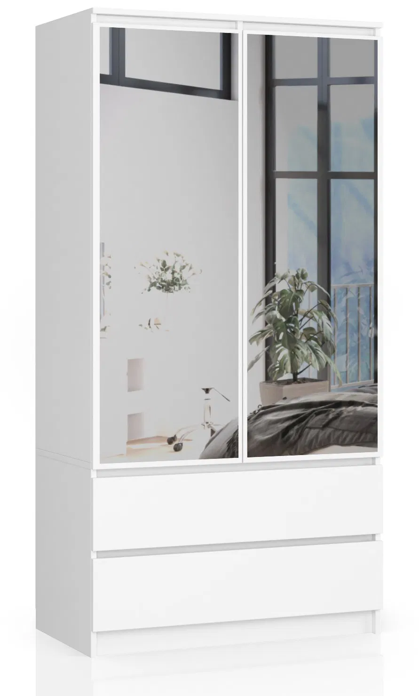

k07_nabytek_market_bila
Šatní skříň SS-90 zrcadlo Bílá
Nabytek-market.cz
5539 Kč
Stránka zároveň uvádí status 'Rychlé dodání'.
Porovnání zahrnuje referenční variantu z nela_kandidat1 a dalších 10 podobných kandidátů. Filtr: šířka 70-95 cm, výška 160-185 cm, hloubka 40-55 cm, zrcadlo, šuplíky. Bílé nebo částečně bílé provedení je plus. Prostorový limit v rohu: max 193x80 cm.
Nabytek-market.cz
5539 Kč
Stránka zároveň uvádí status 'Rychlé dodání'.

Dobrésny.cz
11250 Kč
Hloubka se na stránce liší: tabulka parametrů uvádí 50 cm, textový popis 51 cm.

Dobrésny.cz
11510 Kč
Hloubka se liší podle zdroje: tabulka 50 cm, text 51 cm.

Dobrésny.cz
11510 Kč
Hloubka se liší podle zdroje: tabulka 50 cm, text 51 cm.

SG nábytek
5989 Kč
Doručíme do 3. 4. 2026

SG nábytek
6129 Kč
Doručíme do 3. 4. 2026

SG nábytek
6229 Kč
Doručíme do 3. 4. 2026

Salmax.cz
6209 Kč
Na stránce jsou dvě ceny: nahoře 6209 Kč, v detailním výpisu 6479 Kč.

Dobrésny.cz
11250 Kč
Hloubka se liší podle zdroje: tabulka 50 cm, text 51 cm.

Dobrésny.cz
11250 Kč
Hloubka se liší podle zdroje: tabulka 50 cm, text 51 cm.

Dobrésny.cz
11510 Kč
Bez poznámky
| ID | Název | Obchod | Cena | Šířka | Výška | Hloubka | Barva | Zrcadlo | Šuplíky | Bílá výhoda | Dostupnost | Poznámky |
|---|---|---|---|---|---|---|---|---|---|---|---|---|
| k07_nabytek_market_bila | Šatní skříň SS-90 zrcadlo Bílá | Nabytek-market.cz | 5539 Kč | 90 | 180 | 50 | Bílá | Ano | 2 | Ano | 1-2 týdny | Stránka zároveň uvádí status 'Rychlé dodání'. |
| k01_reference_dobresny_bila | Šatní skříň s otočnými dveřmi a zrcadlem 90 cm bílá | Dobrésny.cz | 11250 Kč | 90 | 180 | 50 | Bílá | Ano | 2 | Ano | Na cestě od dodavatele | Hloubka se na stránce liší: tabulka parametrů uvádí 50 cm, textový popis 51 cm. |
| k02_dobresny_bila_seda | Šatní skříň s otočnými dveřmi a zrcadlem 90cm bílá / šedá | Dobrésny.cz | 11510 Kč | 90 | 180 | 50 | bílá/šedá | Ano | 2 | Ano | Na cestě od dodavatele | Hloubka se liší podle zdroje: tabulka 50 cm, text 51 cm. |
| k03_dobresny_dub_artisan_bila | Šatní skříň s otočnými dveřmi a zrcadlem 90cm dub artisan / bílá | Dobrésny.cz | 11510 Kč | 90 | 180 | 50 | dub artisan/bílá | Ano | 2 | Ano | Na cestě od dodavatele | Hloubka se liší podle zdroje: tabulka 50 cm, text 51 cm. |
| k11_sg_bila_wenge | Šatní skříň se zrcadly S90 2 dvířka 2 zásuvky bílá/wenge | SG nábytek | 5989 Kč | 90 | 180 | 51 | bílá/wenge | Ano | 2 | Ano | Obvykle skladem | Doručíme do 3. 4. 2026 |
| k09_sg_bila | Šatní skříň se zrcadly S90 2 dvířka 2 zásuvky bílá | SG nábytek | 6129 Kč | 90 | 180 | 51 | bílá | Ano | 2 | Ano | Obvykle skladem | Doručíme do 3. 4. 2026 |
| k10_sg_bila_dub_sonoma | Šatní skříň se zrcadly S90 2 dvířka 2 zásuvky bílá/dub sonoma | SG nábytek | 6229 Kč | 90 | 180 | 51 | bílá/dub sonoma | Ano | 2 | Ano | Obvykle skladem | Doručíme do 3. 4. 2026 |
| k08_salmax_bezova | Šatní skříň SS-90 se zrcadlem - béžová | Salmax.cz | 6209 Kč | 90 | 180 | 50 | Béžová | Ano | 2 | Ne | Do 2 týdnů | Na stránce jsou dvě ceny: nahoře 6209 Kč, v detailním výpisu 6479 Kč. |
| k04_dobresny_dub_artisan | Šatní skříň s otočnými dveřmi a zrcadlem 90cm dub artisan | Dobrésny.cz | 11250 Kč | 90 | 180 | 50 | Dub | Ano | 2 | Ne | Na cestě od dodavatele | Hloubka se liší podle zdroje: tabulka 50 cm, text 51 cm. |
| k05_dobresny_sonoma | Šatní skříň s otočnými dveřmi a zrcadlem 90cm sonoma | Dobrésny.cz | 11250 Kč | 90 | 180 | 50 | Dub sonoma | Ano | 2 | Ne | Na cestě od dodavatele | Hloubka se liší podle zdroje: tabulka 50 cm, text 51 cm. |
| k06_dobresny_wenge_sonoma | Šatní skříň s otočnými dveřmi a zrcadlem 90 cm wenge / sonoma | Dobrésny.cz | 11510 Kč | 90 | 180 | 51 | wenge/dub sonoma | Ano | 2 | Ne | Na cestě od dodavatele |
Poznámka: u části variant jde o stejnou konstrukční rodinu skříně v jiných dekorech a z různých e-shopů. To je pro rodinné rozhodování užitečné, protože uvidíte rozdíl v ceně, dostupnosti a vzhledu při skoro stejných rozměrech.